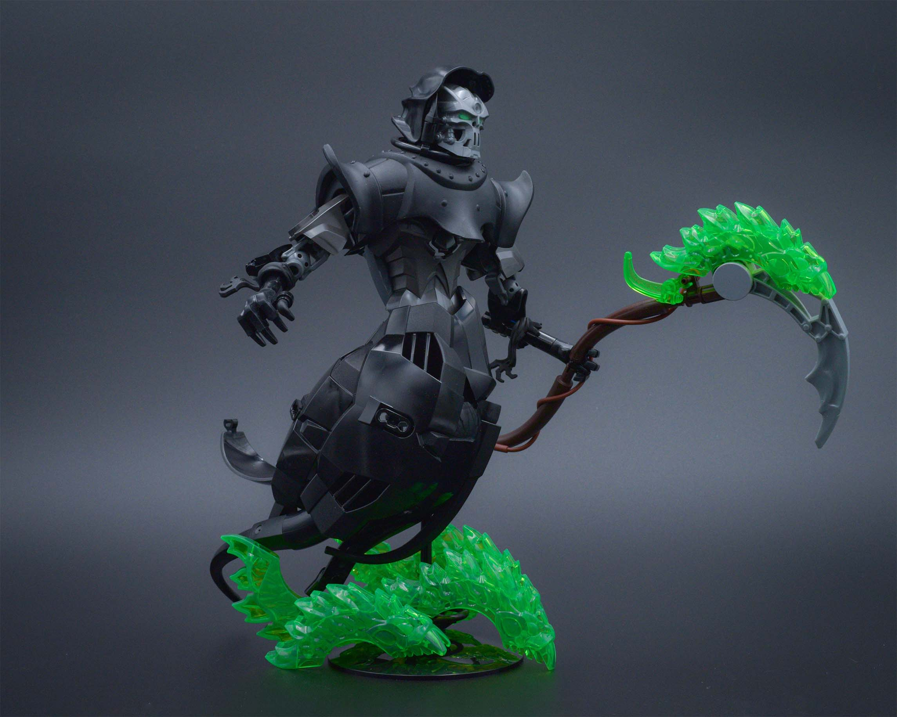
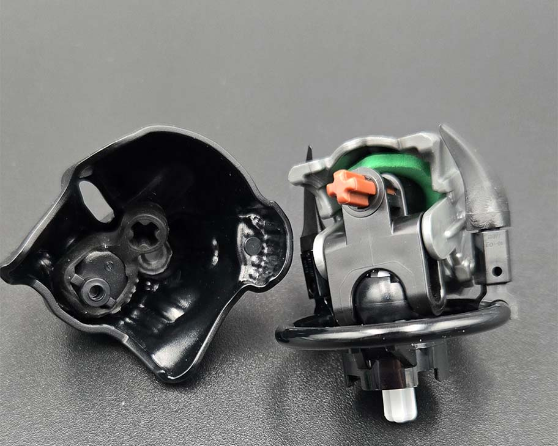
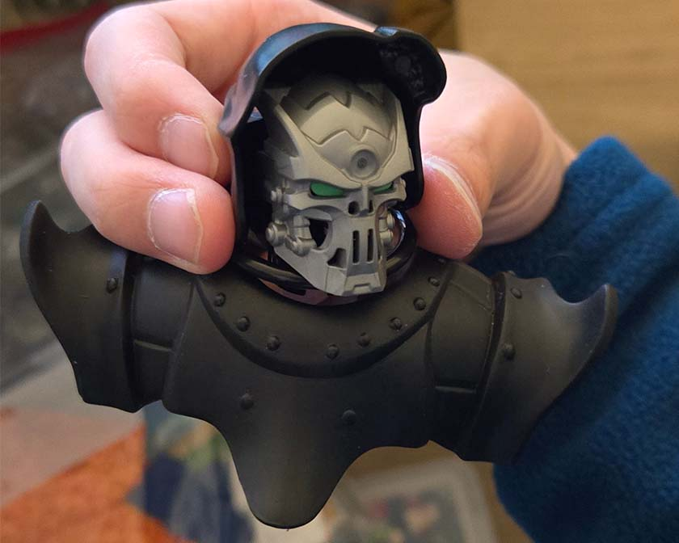
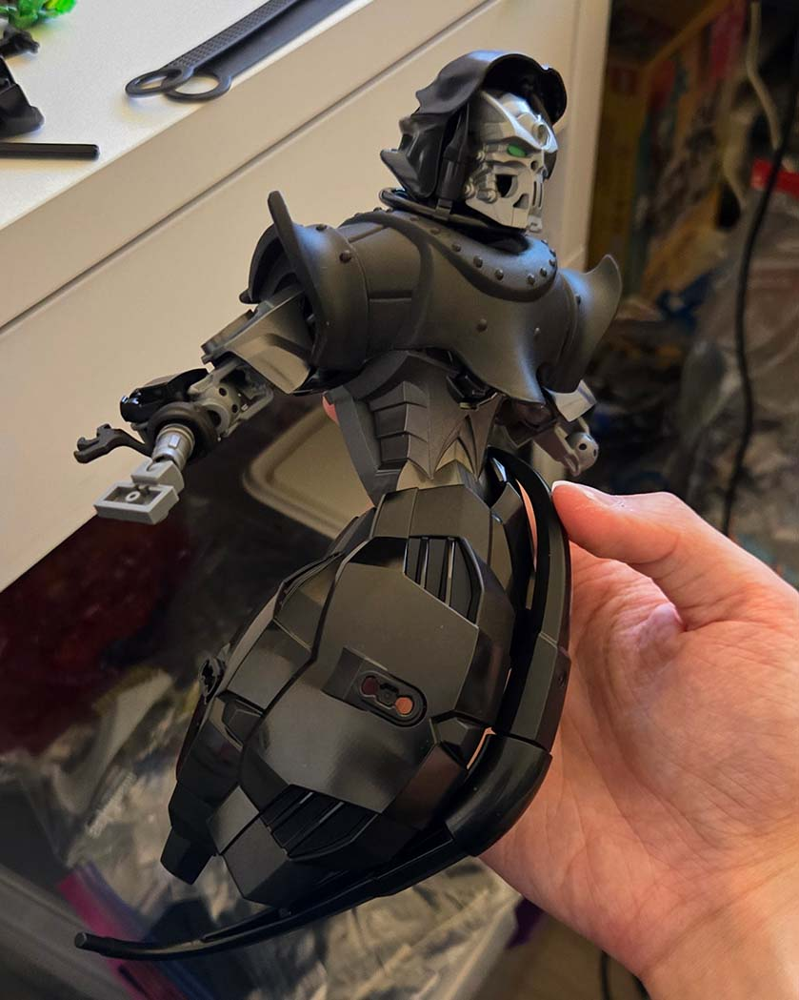
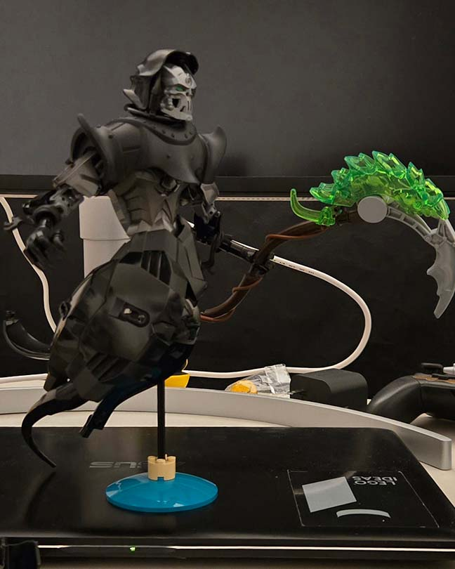
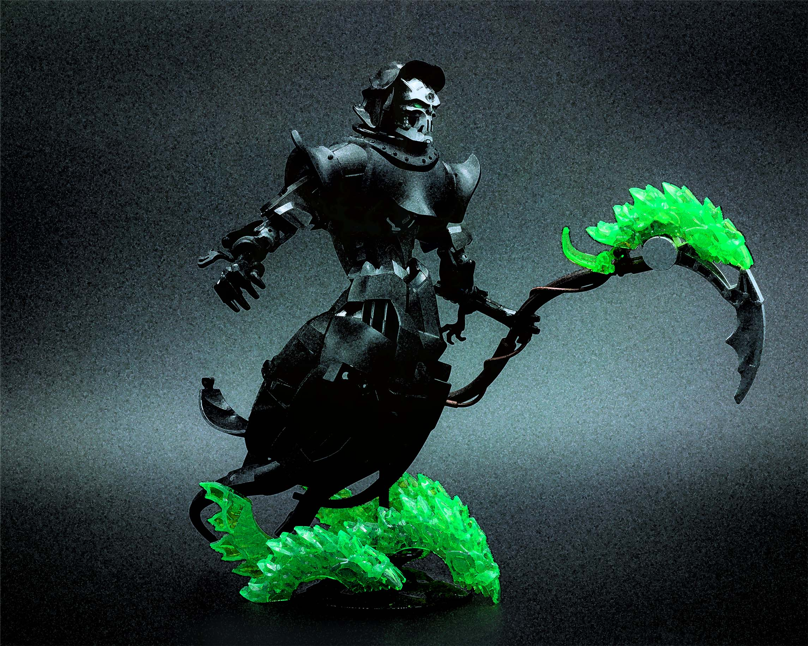
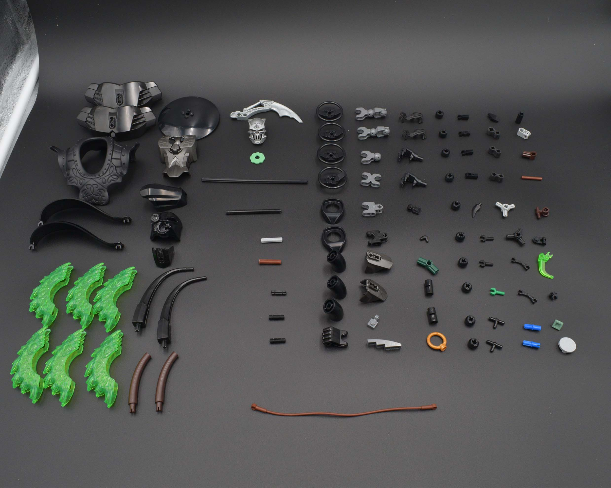

grim reaper

This week's theme, 'Detach', was strange. I find these verb themes to be more difficult as the build either has to be doing the action, or somehow be related to committing said action. Of course, you can also come up with something clever or a pun, but I couldn't really think of something that clever for 'detach'.
I took the route of creating a build related to the action of detaching. In mythology, the Grim Reaper separates (detaches) the soul from the body with its scythe. Hopefully, that's on theme!
the rogue olympics humanoid build strategy
Last year, I did one and half humanoid (counting Prayer of the Wicked as not a full humanoid) builds, so I had an idea of some strategy/part saving techniques on approaching this build. Of course, the head/face is the most important, so I didn't set a hard part count limit for that. Equally, as the scythe is sort of the main connection to the theme, I anticipated it would need quite a few parts in order to get an adequate amount of detail. From last year's experience, arms take up a lot of pieces, and there isn't really a way to simplify those without making it look weird, so that was another mental note for the build. With all these caveats in mind, I decided to not include legs to save on parts, and to simplify the torso as much as possible going into the build.
the face
There was no way I would brick build a skull with the looming part limit. Luckily, Bionicle G2 has graced us with a whole range of skeleton masks, so I dug through my mask bin and picked up this silver skull. To get the eye color, I shoved a belville foam flower into the mask.

Still in part saving brain, I used the inside of a black akaku nuva for the hood. This also ended up pairing quite nicely with the euripides armor to cover a good chunk of the upper torso. A lot of the connections, especially in the head, are made possible with rubber liftarms, as they can be wrapped on a surface to grant a part an axle/bar connection.

torso
For the torso, I relied on mostly large CCBS shells. There are a few system pieces here and there to help with the silhouette. The inside is a central axle and everything attaches off of it. I would've liked to add more texture to the lower torso, but the part limit said otherwise.

a bit of texture that was later removed
only what i want you to see
From last year's Wasteland Operative, I saved on parts by making certain portions of the build asymmetrical. For instance, things that either aren't visible or aren't the focal points of the build have reduced detail. Of course, this isn't something I necessarily like doing for a regular build, but for something like this contest, I needed to save parts wherever I could. The right arm of the reaper (his right, viewer's left) has more detail (and more parts). Generally, we perceive images from left to right. That right arm is both one of the first things you may scan when seeing the moc image and is also in the foreground, so I allocated a few more parts such as the additional finger for the hand (which is an indoraptor claw) as well as cleaning up the shaping near the elbow. In contrast, the left arm in the background has less detail as it is less visible, and the scythe sort of becomes the main focal point of that area.

tying it all together
With all these part savings, I had enough to make a base using some ninjago spinner pieces. We've been graced with some new spinners this year with more colours, which was nice to try out. The spinners are placed like waves to contribute to the floating motion of the reaper.
This is the penultimate round of this year's Rogue Olympics! I'm kind of relieved it's almost over because I need to take a break...

